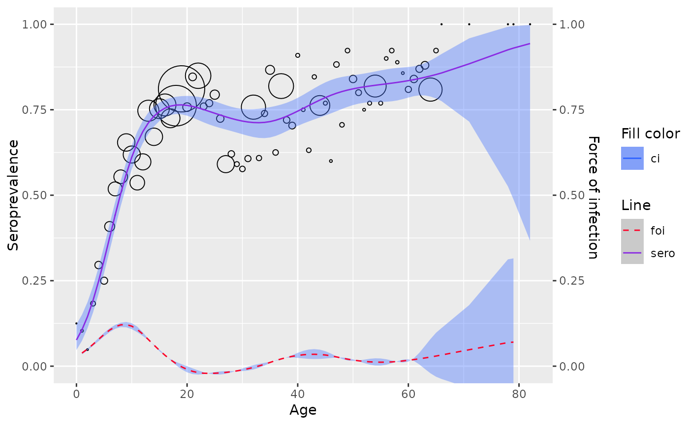

Penalized Spline model
Usage
penalized_spline_model(
age,
pos = NULL,
tot = NULL,
status = NULL,
s = "bs",
link = "logit",
framework = "pl",
sp = NULL
)Arguments
- age
the age vector
- pos
the positive count vector (optional if status is provided).
- tot
the total count vector (optional if status is provided).
- status
the serostatus vector (optional if pos & tot are provided).
- s
smoothing basis to use
- link
link function to use
- framework
which approach to fit the model ("pl" for penalized likelihood framework, "glmm" for generalized linear mixed model framework)
- sp
smoothing parameter
Examples
data <- parvob19_be_2001_2003
model <- penalized_spline_model(data$age, status = data$seropositive, framework="glmm")
#>
#> Maximum number of PQL iterations: 20
#> iteration 1
#> iteration 2
#> iteration 3
#> iteration 4
model$gam$info
#> NULL
plot(model)
